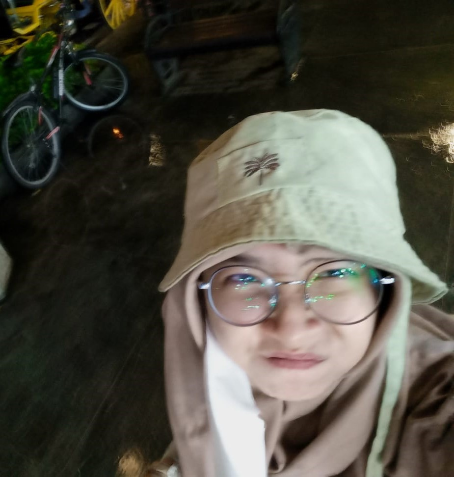

Hello!!!

Maybe this is me
^_____^
tw/cw this portfolio is a visual nightmare that will assault your senses with its chaotic layout, clashing colors, and terrible fonts. The disorganized content feels random, and images are pixelated or stretched. Every page is a new layer of frustration, making you question if it was intentionally bad. By the end, you'll be left cursing the wasted time and regretting every click, because this is the first time.
Hobies
I often spend my time reading books or enjoying manga. I especially enjoy Japanese animated series that tell a variety of compelling stories. In addition to these, I also like watching series from South Korea, where the narratives are equally engaging.
Identity
- name : Nisrina Salwa Putri
- short name : Salwa
- nrp : 3124500012
- birthday : 29 March
- pronouns : she/her
- college : PENS-EEPIS
- major : Computer Science
Who Cares
This is a fun piece of random trivia about me! I'm a huge fan of Japanese manga, and as a result, I have quite a collection of favorite 'husbandos' from various series. Out of all of them, the one I like the most is Orter, mainly because he wears glasses. There's just something about characters with glasses that adds a cool, intellectual vibe, and Orter pulls off that look perfectly! Whether it's his design, personality, or just the glasses, he's definitely my number one.
Nerdy Nuggets
While coding, music becomes my refuge. J-Rock hits just right when the code refuses to cooperate, wrapping me in its energy as I push through the struggles. Yet, in the quiet moments between, you'll find me lost in anime, scrolling through Twitter, diving into Quora, or getting lost in a good book—more often than I'd like to admit. I dream of mastering code with such speed and precision that it leaves me with endless time for the things I love. Until then, it's a delicate dance between focus and escape, where every line of code is a step closer to more time for what truly brings joy.